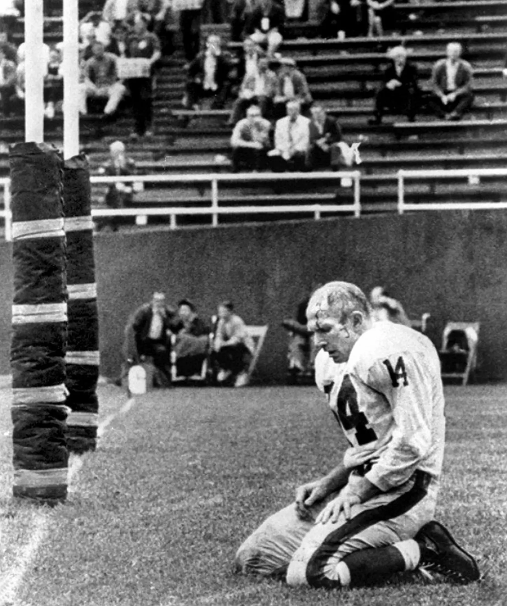
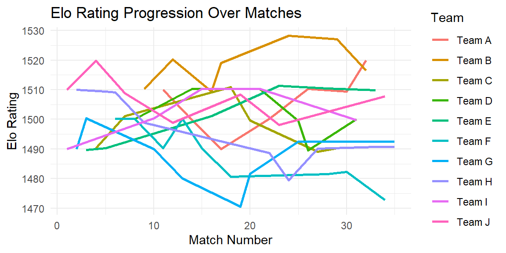

library(tidyverse)
library(elo)
# Define match results
matches <- data.frame(
home_team = c("Team I", "Team G", "Team G", "Team J", "Team E",
"Team H", "Team C", "Team D", "Team B", "Team I",
"Team A", "Team J", "Team F", "Team D", "Team F",
"Team E", "Team A", "Team F", "Team G", "Team C",
"Team I", "Team H", "Team J", "Team H", "Team D",
"Team A", "Team C", "Team E", "Team B", "Team F",
"Team I", "Team B", "Team H", "Team J", "Team G"),
away_team = c("Team J", "Team H", "Team E", "Team C", "Team H",
"Team F", "Team J", "Team F", "Team H", "Team G",
"Team F", "Team B", "Team G", "Team A", "Team I",
"Team B", "Team B", "Team C", "Team J", "Team G",
"Team D", "Team A", "Team E", "Team B", "Team G",
"Team D", "Team H", "Team F", "Team C", "Team A",
"Team D", "Team A", "Team E", "Team F", "Team H"),
home_score = c(0,0,2,3,4,0,3,0,3,4,3,0,2,4,2,3,1,0,2,1,3,1,0,0,0,3,3,3,2,0,2,1,1,5,2),
away_score = c(2,3,0,0,4,0,1,0,0,3,2,3,1,2,4,1,2,2,3,3,3,3,2,3,4,0,4,3,2,0,4,2,1,3,2)
)20 Advanced Ranking Methods
“Baker had crushed the cartilage in my ribs and brutally gashed my forehead. I also suffered a concussion and a cracked sternum. That photo would later become one of the most enduring images in sports history. What a hell of a way to get famous!” - Y.A. Tittle

20.1 Introduction
Building upon foundational ranking methods like Massey and Colley, this chapter explores advanced techniques that accommodate more complex competition structures and dynamic performance assessments. We delve into methods such as Elo ratings, Keener, Markov, and Offense-Defense, utilizing R packages like comperank and elo to implement these models. These methods are particularly useful in scenarios where competitors do not all face each other, and where performance evolves over time.
20.2 Elo Ratings
The Elo rating system was originally designed for ranking chess players, where competitors are paired in head-to-head contests and victory is not always guaranteed for the higher-rated player. The method gained popularity in many competitive fields because of its simple, adaptive, and intuitive formulation. Unlike methods that assume balanced schedules or complete round-robins, Elo ratings dynamically adjust after every match based on expected performance and actual outcomes. This makes Elo particularly appealing for sports environments where schedules are irregular and competitors’ performances change over time.
Today, Elo ratings are widely used across various sports, including soccer (club and international competitions), basketball, and tennis. Moreover, major outlets like FiveThirtyEight use modified Elo models to power predictive rankings for leagues like the NBA and NFL.
20.2.1 How Elo Ratings Work
At its core, the Elo formula updates ratings according to:
\[ R_{\text{new}} = R_{\text{old}} + K \cdot (S - E) \]
Where:
- \(R_{\text{old}}\) is the player’s (or team’s) pre-match rating.
- \(K\) is the maximum possible adjustment per game (chosen by the analyst).
- \(S\) is the actual score (1 for win, 0.5 for draw, 0 for loss).
- \(E\) is the expected score calculated from the pre-match ratings.
The expected score \(E\) is determined by the logistic function:
\[ E = \frac{1}{1 + 10^{(R_{\text{opponent}} - R_{\text{own}})/400}} \]
Thus, defeating a much higher-rated opponent results in a substantial increase in rating, while beating a much lower-rated opponent results in only a modest gain.
20.2.2 Example: 10-Team Soccer League (Incomplete Competition)
Consider a soccer league composed of 10 teams (labeled “Team A” through “Team J”) playing an irregular schedule of 35 matches. Each match has a winner or ends in a draw. Not every team faces every other team, reflecting the typical structure of many sports leagues.
Let’s simulate this using R and the elo package.
Data Setup
Fitting Elo Ratings
# Run Elo model
elo_results <- elo.run(score(home_score, away_score) ~ home_team + away_team, data = matches, k = 20)
# Display final Elo ratings
final_ratings <- as.data.frame(elo_results)
print(final_ratings) team.A team.B p.A wins.A update.A update.B elo.A elo.B
1 Team I Team J 0.5000000 0.0 -1.000000e+01 1.000000e+01 1490.000 1510.000
2 Team G Team H 0.5000000 0.0 -1.000000e+01 1.000000e+01 1490.000 1510.000
3 Team G Team E 0.4856128 1.0 1.028774e+01 -1.028774e+01 1500.288 1489.712
4 Team J Team C 0.5143872 1.0 9.712256e+00 -9.712256e+00 1519.712 1490.288
5 Team E Team H 0.4708367 0.5 5.832654e-01 -5.832654e-01 1490.296 1509.417
6 Team H Team F 0.5135485 0.5 -2.709691e-01 2.709691e-01 1509.146 1500.271
7 Team C Team J 0.4577557 1.0 1.084489e+01 -1.084489e+01 1501.133 1508.867
8 Team D Team F 0.4996100 0.5 7.799115e-03 -7.799115e-03 1500.008 1500.263
9 Team B Team H 0.4868412 1.0 1.026318e+01 -1.026318e+01 1510.263 1498.883
10 Team I Team G 0.4851991 1.0 1.029602e+01 -1.029602e+01 1500.296 1489.992
11 Team A Team F 0.4996213 1.0 1.000757e+01 -1.000757e+01 1510.008 1490.256
12 Team J Team B 0.4979913 0.0 -9.959826e+00 9.959826e+00 1498.908 1520.223
13 Team F Team G 0.5003797 1.0 9.992405e+00 -9.992405e+00 1500.248 1479.999
14 Team D Team A 0.4856131 1.0 1.028774e+01 -1.028774e+01 1510.296 1499.720
15 Team F Team I 0.4999309 0.0 -9.998618e+00 9.998618e+00 1490.249 1510.295
16 Team E Team B 0.4570371 1.0 1.085926e+01 -1.085926e+01 1501.155 1509.364
17 Team A Team B 0.4861249 0.0 -9.722497e+00 9.722497e+00 1489.997 1519.086
18 Team F Team C 0.4843429 0.0 -9.686857e+00 9.686857e+00 1480.563 1510.819
19 Team G Team J 0.4728157 0.0 -9.456314e+00 9.456314e+00 1470.543 1508.364
20 Team C Team G 0.5577043 0.0 -1.115409e+01 1.115409e+01 1499.665 1481.697
21 Team I Team D 0.4999987 0.5 2.589996e-05 -2.589996e-05 1510.295 1510.296
22 Team H Team A 0.5127841 0.0 -1.025568e+01 1.025568e+01 1488.627 1500.253
23 Team J Team E 0.5103732 0.0 -1.020746e+01 1.020746e+01 1498.156 1511.362
24 Team H Team B 0.4562775 0.0 -9.125549e+00 9.125549e+00 1479.501 1528.212
25 Team D Team G 0.5410637 0.0 -1.082127e+01 1.082127e+01 1499.474 1492.518
26 Team A Team D 0.5011208 1.0 9.977585e+00 -9.977585e+00 1510.231 1489.497
27 Team C Team H 0.5289859 0.0 -1.057972e+01 1.057972e+01 1489.086 1490.081
28 Team E Team F 0.5442086 0.5 -8.841723e-01 8.841723e-01 1510.478 1481.447
29 Team B Team C 0.5560702 0.5 -1.121403e+00 1.121403e+00 1527.090 1490.207
30 Team F Team A 0.4586711 0.5 8.265773e-01 -8.265773e-01 1482.273 1509.404
31 Team I Team D 0.5298950 0.0 -1.059790e+01 1.059790e+01 1499.697 1500.095
32 Team B Team A 0.5254308 0.0 -1.050862e+01 1.050862e+01 1516.582 1519.913
33 Team H Team E 0.4706800 0.5 5.863992e-01 -5.863992e-01 1490.667 1509.892
34 Team J Team F 0.5228417 1.0 9.543165e+00 -9.543165e+00 1507.700 1472.730
35 Team G Team H 0.5026636 0.5 -5.327241e-02 5.327241e-02 1492.465 1490.721Interpreting Results
The final ratings reflect each team’s strength after all matches. Teams that consistently won against tough opponents rise in the rankings, while teams with losses—especially against lower-rated teams—fall. Elo ratings also reward close games; for example, a narrow loss against a top team is penalized less harshly than a blowout loss.
This example captures key features of the Elo system:
- Dynamic adjustments after each match.
- Sensitivity to opponent strength.
- Accommodation of incomplete schedules.
A typical plot that illustrates the elo ratings is the Elo Rating Progression plot.

20.2.3 Extensions and Variants
In sports analytics, analysts often modify the basic Elo model to better suit particular contexts. Examples include:
- Home Advantage: Adding extra rating points for home teams.
- Margin of Victory: Incorporating goal differential to adjust the rating impact.
- Regression to Mean: Reducing ratings between seasons to reflect team changes.
- Seasonal Reset: Applying adjustments or resets between seasons or tournaments.
For instance, soccer models often add 50–100 Elo points to home teams to reflect home-field advantage. Basketball Elo systems frequently include margin of victory.
20.2.4 Limitations
- Head-to-head based, thus indirect comparisons (transitivity) are weaker.
- Choice of K value and logistic scale can affect stability.
- Does not explicitly model margin of victory unless modified.
20.3 Keener Method
While methods such as Elo and Massey are powerful and intuitive, they primarily rely on win-loss outcomes or points scored to infer rankings. However, in many sports competitions, especially those with incomplete schedules, it can be advantageous to incorporate not just whether a team won, but who they defeated and how strongly they performed relative to their opponents.
The Keener Method, developed by James Keener (1993), was proposed to address this issue using linear algebra and matrix theory. This method constructs a head-to-head matrix where each element reflects the strength of a team based on its performance against other teams. Ratings are then computed as the dominant eigenvector of this matrix, which captures both direct and indirect relationships among competitors.
This eigenvector-based approach is inspired by models used in social sciences and economics (such as PageRank in internet search algorithms), where the importance of an individual or entity depends not only on direct outcomes but also on the status of those they are connected to.
20.3.1 Conceptual Overview
At its core, the Keener method proceeds as follows:
Construct a head-to-head matrix \(S\) where each element \(S_{ij}\) reflects how team \(i\) performed against team \(j\).
Apply pairwise normalization to each entry, which accounts for the number of games played and the direction of competition: \[ a_{ij} = \frac{S_{ij} + 1}{S_{ij} + S_{ji} + 2} \] This transformation ensures that the matrix entries are bounded between 0 and 1, and avoids extreme values from dominating the calculation.
Skew the values using a function to reduce the influence of outliers or lopsided results. This step softens unusually dominant or poor performances to avoid them having an outsized effect on the ratings.
Normalize the matrix to account for varying numbers of games played. A common approach divides each row by the number of games played by the corresponding team, ensuring that teams with fewer games do not receive artificially inflated ratings.
Ensure irreducibility by adding a small value to matrix entries if necessary. This guarantees that the matrix satisfies the mathematical requirements for the Perron-Frobenius theorem, which ensures a unique and strictly positive dominant eigenvector.
Compute the dominant eigenvector of the resulting matrix. This eigenvector contains the Keener ratings, with larger values indicating higher team rankings.
20.3.2 Technical Details
Step 1: Building the Head-to-Head Matrix
Each element \(S_{ij}\) is calculated from game outcomes. Possible definitions of \(S_{ij}\) include:
- Total points scored by team \(i\) against team \(j\).
- Number of wins of team \(i\) against team \(j\).
- Point differential (points scored minus points allowed).
The choice of definition should reflect the nature of the sport and the goals of the ranking system.
Step 2: Pairwise Normalization
Once the raw matrix is computed, it is normalized as:
\[ a_{ij} = \frac{S_{ij} + 1}{S_{ij} + S_{ji} + 2} \]
This form has desirable properties:
- Avoids division by zero.
- Produces values between 0 and 1.
- Reflects competitive balance: if \(S_{ij} = S_{ji}\), then \(a_{ij} = 0.5\).
Step 3: Skewing
Sports outcomes can sometimes be extreme, with blowout wins or losses. To mitigate this, a skewing function can be applied:
\[ a_{ij} \rightarrow \text{skew_fun}(a_{ij}) \]
The default skewing function, skew_keener(), compresses extreme values toward the center of the scale, which makes the matrix more stable and reduces the influence of anomalies.
Step 4: Normalization for Unequal Games
In real-world sports, teams often play different numbers of games. To account for this, each row of the matrix is normalized:
\[ \text{Normalized } a_{ij} = \frac{a_{ij}}{\text{Number of games played by team } i} \]
This ensures that teams playing more games do not receive unfairly higher ratings simply due to volume.
Step 5: Irreducibility
The Perron-Frobenius theorem guarantees that a unique, strictly positive eigenvector exists only for irreducible matrices. To ensure this property, a small value (typically the smallest nonzero entry multiplied by a small constant \(\epsilon\)) is added if necessary.
Step 6: Computing Ratings
Finally, the Keener ratings are computed as the dominant eigenvector of the matrix:
\[ A \cdot \mathbf{r} = \lambda \cdot \mathbf{r} \]
Where:
- \(A\) is the normalized and skewed Head-to-Head matrix.
- \(\mathbf{r}\) is the rating vector.
- \(\lambda\) is the dominant eigenvalue (not of primary interest).
The rating vector \(\mathbf{r}\) is scaled so that the ratings sum to 1 for interpretability.
20.3.3 Interpretation of Keener Ratings
Higher values of the Keener rating indicate stronger teams, reflecting both:
- Direct performance (how well they did against other teams), and
- Indirect strength (how strong their opponents were).
For example, defeating a strong team will improve a team’s rating more than defeating a weak team.
20.3.4 Applications and Considerations
The Keener method is particularly useful in leagues or tournaments where:
- Teams play different numbers of games.
- The schedule is unbalanced.
- Margin of victory or opponent strength should be reflected.
However, it assumes that performance is transitive and relatively stable, which may not hold in all sports or seasons.
20.3.5 Example in R (using comperank)
library(comperank)
rank_keener(ncaa2005, sum(score1), keep_rating = TRUE)# A tibble: 5 × 3
player rating_keener ranking_keener
<chr> <dbl> <dbl>
1 Duke 0.0671 5
2 Miami 0.351 1
3 UNC 0.158 4
4 UVA 0.161 3
5 VT 0.263 220.4 Markov Method
In competitive sports, it is often desirable to rank teams not only based on their win-loss records or the scores of individual games, but also in a way that reflects the flow of competition across the league. That is, when Team A beats Team B, and Team B beats Team C, this suggests that Team A should likely be rated above Team C, even if they never played each other directly.
The Markov method captures this idea naturally using concepts from probability and linear algebra. Specifically, the method models competition as a Markov chain, where teams “pass along” strength or credit to those they lose to or defeat. The relative ranking of teams is then determined by the stationary distribution of this Markov chain, which indicates the long-run proportion of time the process would spend at each team if games continued indefinitely.
By modeling competitions this way, the Markov method accounts not only for direct wins and losses, but also for the strength of teams defeated (and the strength of those losses), thus providing an elegant way to infer global rankings from local interactions.
20.4.1 Conceptual Overview
The Markov method involves several steps:
- Construct a transition matrix, where each element represents the proportion of “credit” a team gives to its opponents based on outcomes.
- Ensure the matrix is stochastic, meaning rows sum to 1 (as required for a valid Markov chain).
- Compute the stationary distribution, which represents the long-term proportion of “strength” or “importance” assigned to each team.
- Interpret the stationary distribution as the team ratings or rankings.
20.4.2 Step-by-Step Procedure
Step 1: Building the Transition Matrix
The method starts by constructing a matrix \(P\), called the transition matrix, where the entry \(P_{ij}\) represents the probability that the ranking process transitions from team \(i\) to team \(j\). Intuitively:
- If Team A loses to Team B, some “strength” flows from A to B.
- If Team A defeats Team B, B gives credit to A.
This can be built from win counts, point differentials, or other measures of performance. One common approach is to define:
\[ P_{ij} = \frac{\text{Number of times team } i \text{ lost to team } j}{\text{Total number of games played by team } i} \]
Alternatively, in point-based systems:
\[ P_{ij} = \frac{\text{Points allowed by team } i \text{ to team } j}{\text{Total points allowed by team } i} \]
This ensures that rows sum to 1, satisfying the stochastic matrix condition.
Handling No Games or Zero Totals
If a team has not lost or allowed points to any team (e.g., an undefeated team), small adjustments or smoothing may be applied (such as adding a small constant to all entries) to avoid rows summing to zero, which would break the Markov model.
Step 2: Computing the Stationary Distribution
Once the matrix \(P\) is built, the next step is to find its stationary distribution \(\pi\), which satisfies:
\[ \pi = \pi P \]
and
\[ \sum_i \pi_i = 1 \]
This vector \(\pi\) represents the long-run proportion of “credit” or “importance” held by each team in the competition network. In other words, if competition continued indefinitely, \(\pi_i\) is the proportion of time the process would “visit” team \(i\).
In matrix algebra, \(\pi\) is the dominant left eigenvector of \(P\) corresponding to eigenvalue 1.
Step 3: Interpreting Rankings
Teams with higher values in \(\pi\) are considered stronger, as they receive more credit from the flow of competition. This incorporates both:
- Direct performance (winning games or scoring points), and
- Indirect strength (beating good teams, or losing only to top teams).
The resulting rankings thus naturally reflect the interconnectedness and relative importance of each competitor.
20.4.3 Applications and Advantages
The Markov method is particularly useful in sports environments characterized by:
- Incomplete schedules, where not every team faces every other team.
- Irregular competition patterns, such as college sports, tennis, or round-robin tournaments.
- Desire to emphasize strength of schedule, as the model naturally accounts for opponent quality.
Advantages
- Accounts for indirect competition (“I beat the team that beat you”).
- Ensures every team is rated, even if they do not play head-to-head.
- Mathematically robust and elegant.
Limitations
- Can produce unstable results if teams are disconnected (require smoothing).
- Does not explicitly account for margin of victory unless incorporated into the matrix construction.
- May favor teams in more connected parts of the schedule network.
20.4.4 Example in R (using comperank)
rank_markov(
cr_data = ncaa2005,
comperes::num_wins(score1, score2, half_for_draw = FALSE),
stoch_modify = vote_equal,
keep_rating = TRUE
)# A tibble: 5 × 3
player rating_markov ranking_markov
<chr> <dbl> <dbl>
1 Duke 0.0876 5
2 Miami 0.438 1
3 UNC 0.146 3
4 UVA 0.109 4
5 VT 0.219 220.4.5 Relationship to Other Ranking Methods
| Method | Handles Incomplete Schedules | Accounts for Opponent Strength | Uses Point Differentials |
|---|---|---|---|
| Massey | Yes | Partially | Yes |
| Colley | Yes | No | No |
| Elo | Yes | Yes (indirectly through ratings) | Optional |
| Keener | Yes | Yes (via eigenvector structure) | Optional |
| Markov | Yes | Yes (flow-based) | Optional |
As shown above, the Markov method excels when the strength of schedule and indirect results are important considerations.
20.5 The Offense-Defense Method
Many ranking methods, such as Massey, Elo, and even Keener and Markov, focus primarily on overall team performance — considering whether teams win or lose and how they perform relative to others. However, in many sports, success is the result of two distinct dimensions of performance:
- Offense: The ability to score points (or goals).
- Defense: The ability to prevent opponents from scoring.
For example, a team may excel offensively but be weak defensively, while another may win many games based on a strong defense despite scoring relatively few points.
The Offense-Defense Method explicitly models this dual nature of performance by assigning two ratings to each team:
- An Offensive rating, reflecting how well the team scores.
- A Defensive rating, reflecting how well the team prevents opponents from scoring.
By jointly modeling these two dimensions, this method provides a more nuanced and complete assessment of team strength than methods that focus only on net results.
20.5.1 Conceptual Overview
The Offense-Defense method involves the following key ideas:
Construct a matrix of points scored from team \(i\) to team \(j\), capturing head-to-head offensive performance.
Normalize this matrix so that rows (or columns) represent proportional contributions.
-
Apply iterative updates:
- Offensive ratings are improved by scoring against teams with strong defensive ratings.
- Defensive ratings are improved by limiting the scoring of teams with strong offensive ratings.
Converge to a solution where each team’s offense and defense ratings are mutually consistent.
In matrix terms, the problem becomes finding vectors \(\mathbf{o}\) (offense) and \(\mathbf{d}\) (defense) such that:
\[ \mathbf{o} = A \cdot \mathbf{d}^{-1} \]
\[ \mathbf{d} = A^T \cdot \mathbf{o}^{-1} \]
Where:
- \(A\) is the matrix of points scored (i.e., \(A_{ij}\) is the points scored by team \(i\) against team \(j\)).
- \(A^T\) is the transpose (points allowed).
- \(\mathbf{o}^{-1}\) and \(\mathbf{d}^{-1}\) indicate element-wise reciprocals.
Through iteration, these equations converge to stable offense and defense ratings.
20.5.2 Step-by-Step Procedure
Step 1: Building the Points Matrix
The matrix \(A\) is constructed as follows:
\[ A_{ij} = \text{Total points scored by team } i \text{ against team } j \]
If no games occurred between teams, entries are typically set to zero.
Step 2: Normalization (Optional)
To avoid domination by teams that played more games, rows or columns may be normalized to represent proportions rather than raw counts.
Step 3: Iterative Rating Updates
Using an iterative algorithm, offensive and defensive ratings are updated repeatedly:
\[ o_i^{(t+1)} = \sum_j A_{ij} \cdot \frac{1}{d_j^{(t)}} \]
\[ d_i^{(t+1)} = \sum_j A_{ji} \cdot \frac{1}{o_j^{(t+1)}} \]
Where:
- \(o_i^{(t)}\) and \(d_i^{(t)}\) are the offense and defense ratings at iteration \(t\).
- Iteration continues until ratings stabilize (changes fall below a tolerance level).
Step 4: Interpreting Ratings
- A high offense rating indicates a team that scores frequently against strong defenses.
- A low defense rating (note: lower is better) indicates a team that limits scoring, especially from strong offenses.
To create an overall ranking, analysts may use:
\[ \text{Overall Rating} = \frac{o_i}{d_i} \]
Higher values indicate stronger overall teams that both score well and prevent scoring effectively.
20.5.3 Example in R (using comperank)
# A tibble: 5 × 7
player rating_off rating_def rating_od ranking_off ranking_def ranking_od
<chr> <dbl> <dbl> <dbl> <dbl> <dbl> <dbl>
1 Duke 39.7 1.57 25.3 5 5 5
2 Miami 181. 0.860 211. 2 2 2
3 UNC 58.1 1.15 50.6 4 4 4
4 UVA 95.0 0.914 104. 3 3 3
5 VT 183. 0.532 344. 1 1 1This function in comperank:
- Automatically builds the scoring matrix.
- Performs iterative updates.
- Returns offense and defense ratings, as well as the overall ranking.
20.5.4 Applications and Advantages
The Offense-Defense method is especially valuable in sports where:
- Both scoring ability and defensive prowess are critical (e.g., basketball, football, soccer).
- Blowout scores and defensive shutouts occur.
- It is important to disentangle teams that win via different styles.
Advantages
- Captures both offensive and defensive performance explicitly.
- More nuanced than simple win-loss based methods.
- Allows identification of teams that are elite offensively or defensively, even if overall rankings are modest.
Limitations
- Requires detailed game score data (win-loss results alone are insufficient).
- Iterative algorithms may be sensitive to initial values or convergence criteria.
- Interpretation is more complex, as two ratings (offense and defense) are produced.
20.5.5 Comparison with Other Methods
| Method | Uses Point Totals | Separates Offense and Defense | Handles Incomplete Schedules |
|---|---|---|---|
| Massey | Yes | No | Yes |
| Colley | No | No | Yes |
| Elo | Optional | No | Yes |
| Keener | Optional | No | Yes |
| Markov | Optional | No | Yes |
| Offense-Defense | Yes | Yes | Yes |
The Offense-Defense method is unique in its explicit separation of scoring and defending ability, making it highly informative for performance analysis.